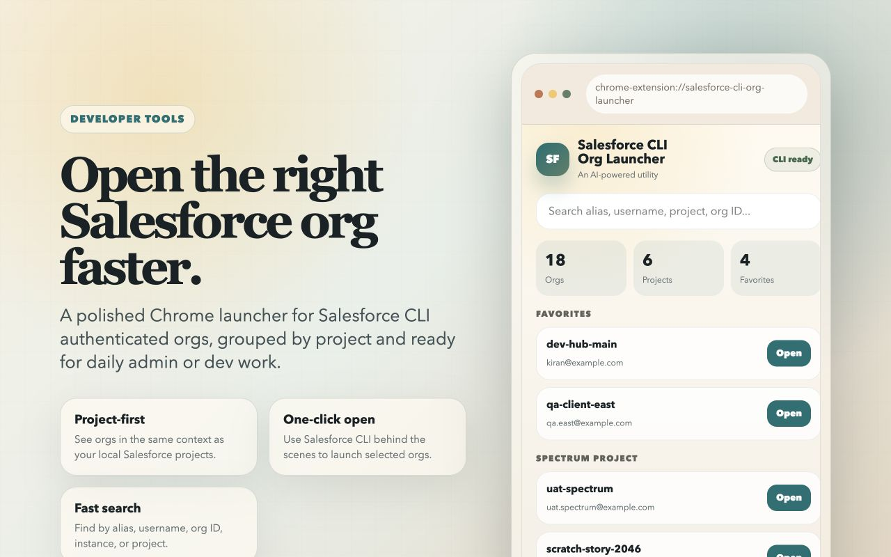
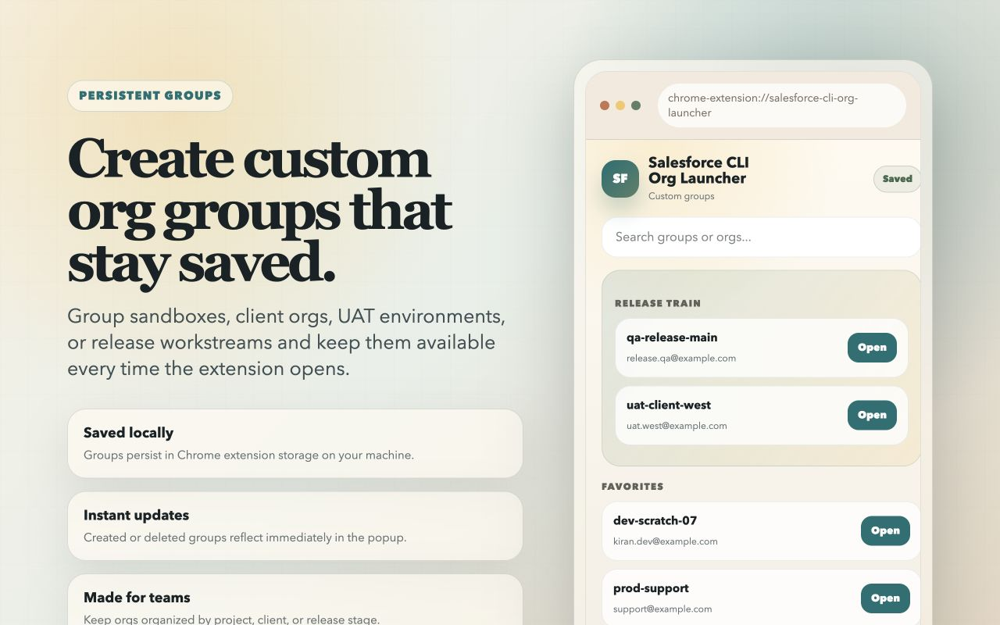
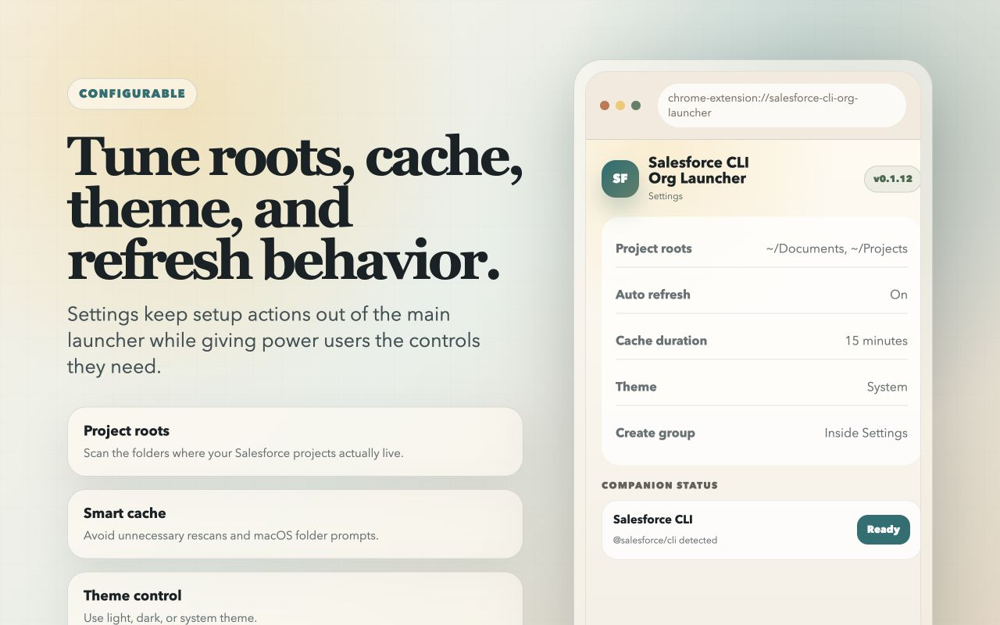
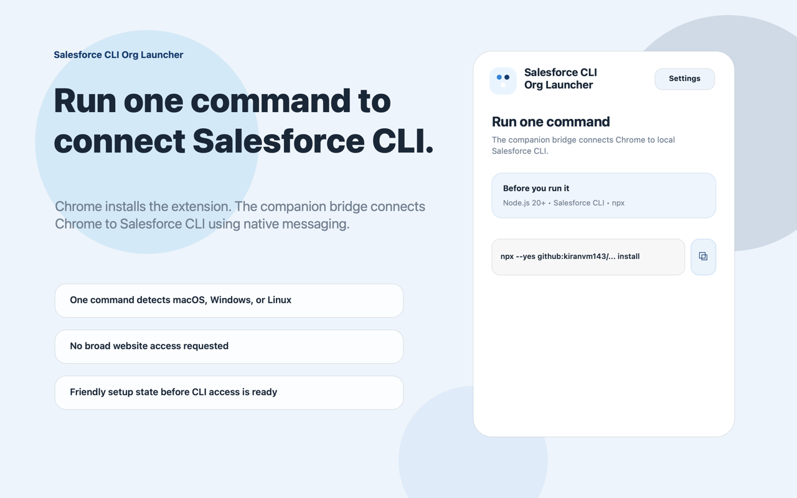

Launch authenticated orgs
Open Salesforce CLI authenticated orgs directly from Chrome without manually running `sf org open` every time.
Salesforce CLI Org Launcher turns your local Salesforce CLI auth list into a clean, searchable Chrome launcher built around projects, favorites, and saved groups. No more digging through long terminal output when you just want the right org now.

A focused popup UI that surfaces authenticated orgs quickly, lets you search across aliases, usernames, project names, instance URLs, and org IDs, and opens the selected org in a new Chrome tab.
This is the full extension experience, not just a helper script. The browser extension, service worker, and native companion work together to give Salesforce developers a reliable launcher around their existing CLI setup.
Open Salesforce CLI authenticated orgs directly from Chrome without manually running `sf org open` every time.
See orgs grouped around local project roots so the popup matches how you actually navigate development work.
Search aliases, usernames, project names, instance URLs, and org IDs from one compact launcher.
Save favorite orgs and create your own persistent groups for clients, releases, environments, or teams.
Project roots, theme, auto-refresh, cache duration, expanded sections, and groups are stored locally in Chrome.
If a CLI auth session is expired, the launcher shows a clear error so the user can reauthorize instead of guessing.
Chrome Web Store installs the extension. The local companion host is installed once per machine so Chrome can securely communicate with Salesforce CLI through native messaging.
Install Salesforce CLI Org Launcher from Chrome Web Store once the listing is live.
Run one Node.js command. It detects macOS, Windows, or Linux, installs the right package, and smoke-tests Windows CLI detection.
Open the extension, click Refresh, and launch orgs directly from the popup UI.
Most users can install with one command. The manual packages remain available for managed distribution and offline setup. These installers target the published extension ID nmjgfcdchchicaophfglfeijceibpkde, include compatibility allowlist entries for prior launcher builds, and save the install-time PATH on Windows so Chrome can find Salesforce CLI reliably.
npx --yes github:kiranvm143/salesforce-cli-org-launcher-service-worker install
Install the local native host for macOS or Linux with the included shell script.
Install the local native host on Windows with the ready-to-run setup app.
Use this ZIP for portable, offline, or managed PowerShell installation.
Build SalesforceCliOrgLauncherCompanionSetup.exe on Windows with Inno Setup 6.
The extension is designed to feel practical and fast: launcher first, settings close by, and setup guidance available when the CLI or native host needs attention.

Create your own group structure and keep it available the next time the extension opens.

Configure project roots, cache duration, auto-refresh behavior, and theme preferences from one place.

When the CLI or companion is missing, the extension gives users concrete next steps instead of dead buttons.
The extension is designed to stay local-first, rely on narrow permissions, and avoid broad website access. That makes it easier to trust, easier to review, and easier to adopt across teams.
The launcher is built around local productivity. It does not need “read and change all your data on all websites,” and it does not send Salesforce org metadata to the developer or third-party analytics systems.
Read the full privacy policy in the hosted privacy page or review the written version in PRIVACY_POLICY.md.